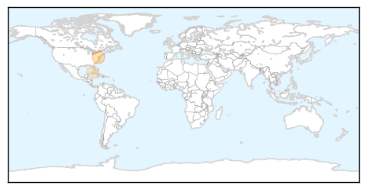
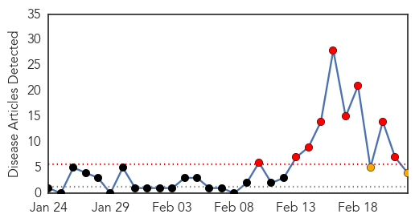
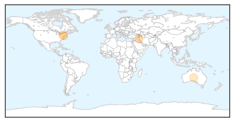
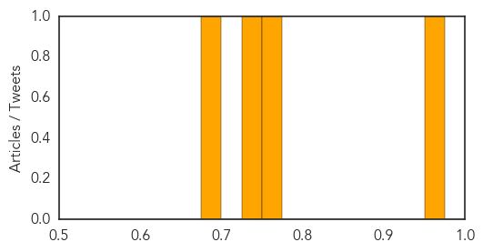

Pertussis
30-Day Web Trend
30-Day Twitter Trend
0 alerts, 0 warnings

Article Locations
Article Confidences

Top Articles:
Top Tweets:
-
No tweets found for Feb 22, 2015
Hepatitis
30-Day Web Trend
9 alerts, 2 warnings

30-Day Twitter Trend
0 alerts, 0 warnings

Article Locations
Article Confidences
Top Articles:
- 0.964
- Iraq: Early Warning and Alert Response Network (EWARN) Snapshot № 4 - Displacement Crisis in Iraq from week 39 to week 52, 2014 - Iraq
- 0.755
- Patties Foods claim there's no proof their berries are linked to hepatitis A
- 0.733
- Finger-pointing, lawsuits likely to follow 'superbug' scare
- 0.697
- Finger-pointing, lawsuits likely to follow 'superbug' scare
Top Tweets:
-
No tweets found for Feb 22, 2015